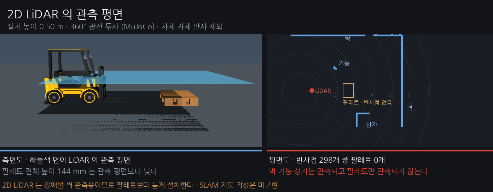
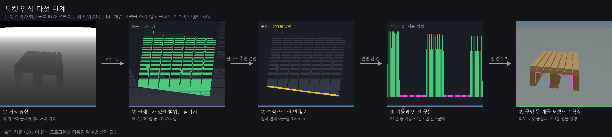
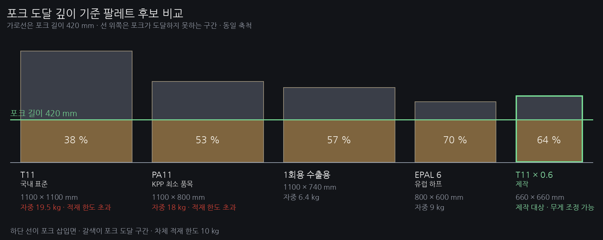
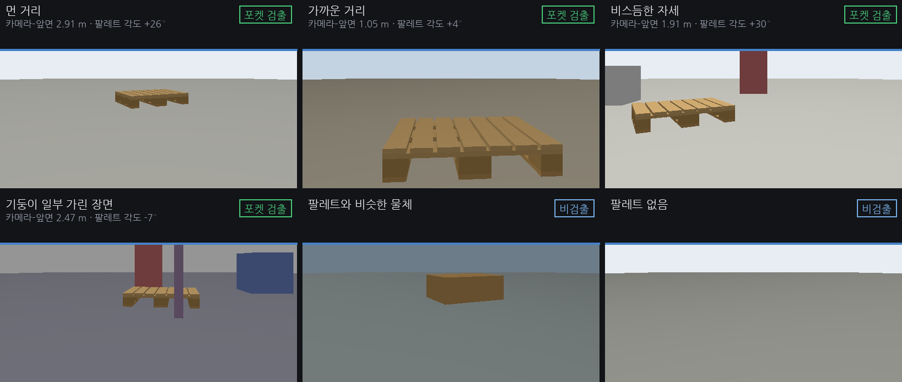
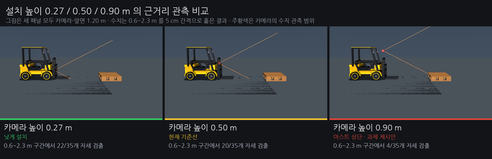
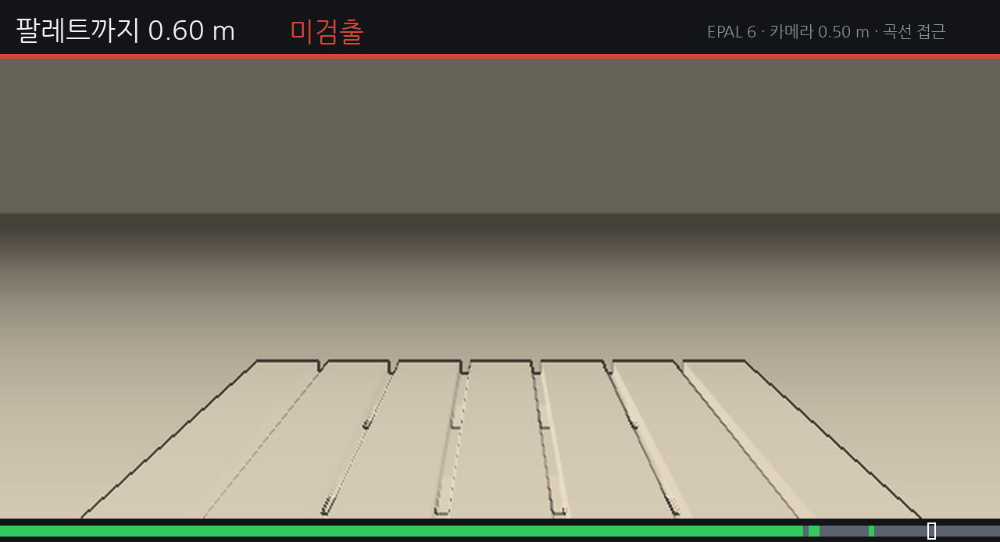

① 포켓 인식
깊이 영상에서
팔레트·포켓 검출
합성 평가 완료

깊이 영상에서
팔레트·포켓 검출
합성 평가 완료
포켓 위치·방향을
로봇 기준으로 표시
구현 완료
장애물을 피하며
팔레트에 접근
차체 입고 후
포켓 추적 후
포크 삽입
추적: 다음 주
삽입: 차체 입고 후
목적지까지
운반·하역
삽입 구현 후



검출 대상 60장면(60/60 검출) · 비검출 대상 40장면(잘못 검출 0/40)



포켓 인식·좌표 산출
합성 장면 평가
완료
포켓 위치 추적
관측 중단 시 정지
주행 중 장애물 정지·우회
합성 시험 예정
차체 실측·시험용 팔레트 제작
실센서 재측정
계획
지도·주행 제어
실제 삽입·이송·하역
계획